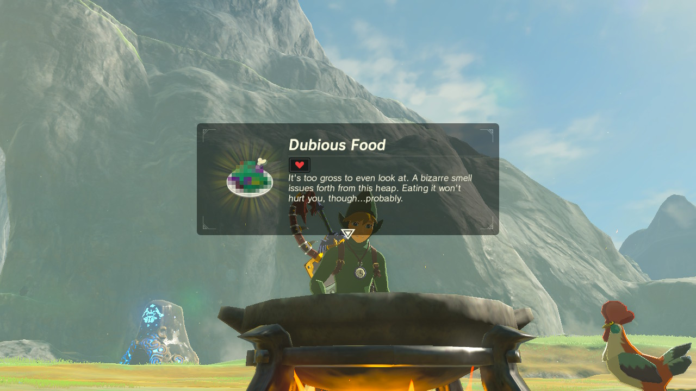

I think this is one of the most underrated dish of Breath of the Wild. It might be too gross to even look at, and the smell might be bizarre, but eating it won't hurt you...probably.
But anyways, despite it looks it can be eaten and it's very easy to make. You can use almost any ingredients you have on you, and I will show you how I make mine.
To make this delicacy we will need:
Almost all of the ingredients for this recipe can be found by exploring Hyrule, but for the purposes of these recipes, and the lack of motivation to work hard, Link bought almost all of the ingredients at the local stores of Hyrule.
Execpt for the bokoblin horns. He...uh...happened to find those somewhere.

Now that we've gathered all of our ingredients, let's assemble this dubious thing.